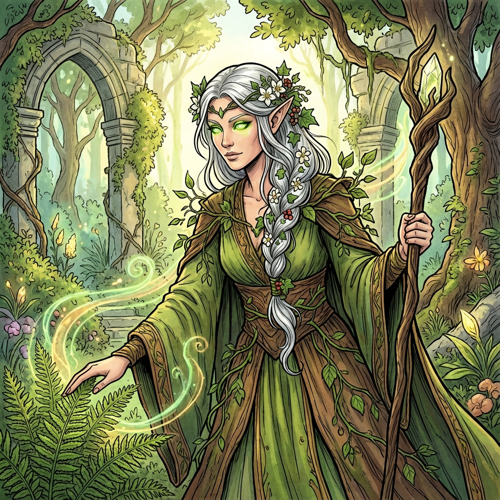

Drawn by her druidic calling and curiosity, Lunara has dedicated herself to tending Everpeak's living gardens and green spaces that thrive at this unnatural altitude. She helps maintain the delicate balance of Nature Essence flowing through the citadel.

Lunara
High Elf Druid
Class: Druid (Circle of the Moon)
Race: High Elf
Age: Mature (centuries old)
Background
Lunara is old enough to remember a world before she journeyed to Everpeak, though she did not grow up in the citadel. She came decades ago, following the quiet plea spread through many lands after the last alignment.
Personality
Serene, peaceful, and deeply connected to nature. Lunara moves with grace and speaks with ancient wisdom. She accepts ambiguity like nature's shifting seasons and nurtures what she can with patient care.
Physical Appearance
Tall, graceful high elf (6+ feet). Ageless beauty with ancient wisdom in bright green eyes. Long silver-white hair adorned with flowers and vines. Delicate elven features. Pale skin with slight green undertones from nature connection.
Abilities & Traits
**Druid Abilities:**
- **Wild Shape:** Transform into beasts
- **Spellcasting:** Nature-themed divine magic
- **Combat Wild Shape:** Enhanced animal forms (Circle of Moon)
- **Nature's Sanctuary:** Beasts find it hard to attack
- **Speak with Animals:** Communicate with beasts
**High Elf Traits:**
- **Fey Ancestry:** Advantage against charm, immune to sleep
- **Trance:** Meditate instead of sleep (4 hours)
- **Cantrip:** Knows one wizard cantrip
- **Darkvision:** See in dim light
- **Wild Shape:** Transform into beasts
- **Spellcasting:** Nature-themed divine magic
- **Combat Wild Shape:** Enhanced animal forms (Circle of Moon)
- **Nature's Sanctuary:** Beasts find it hard to attack
- **Speak with Animals:** Communicate with beasts
**High Elf Traits:**
- **Fey Ancestry:** Advantage against charm, immune to sleep
- **Trance:** Meditate instead of sleep (4 hours)
- **Cantrip:** Knows one wizard cantrip
- **Darkvision:** See in dim light
Equipment
- Flowing robes of natural greens and browns
- Living vines and flowers woven into clothing
- Wooden staff carved with nature symbols
- Druidic focus (special seed from Marivielle)
- Natural jewelry (flowers, wooden beads)
- Greenbriar Band (Nature essence item)
- Living vines and flowers woven into clothing
- Wooden staff carved with nature symbols
- Druidic focus (special seed from Marivielle)
- Natural jewelry (flowers, wooden beads)
- Greenbriar Band (Nature essence item)
Player Information
**Player: Sofia (Age 13)**
**Playstyle:** Nature-focused roleplay, environmental interaction, diplomatic solutions. Comfortable with both combat and social encounters.
**Theme Preferences:** Nature connection, environmental stewardship, balance